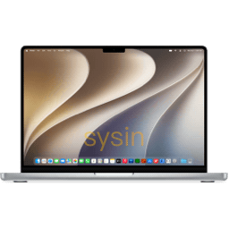

请访问原文链接：macOS Golden Gate 27.0 beta 2 (26A5368g) ISO、IPSW、PKG 下载 查看最新版。原创作品，转载请保留出处。
作者主页：sysin.org
2026 年 6 月 8 日
WWDC26：Apple 推出新一代 Apple 智能、Siri AI、强大的家长控制功能与一系列全面的软件功能升级

Apple 在 WWDC26 上发布了新一代 Apple 智能、Siri AI、强大的家长控制功能，以及涵盖 iOS、iPadOS、macOS、watchOS 和 visionOS 的大范围软件升级。
加利福尼亚州，库比提诺 Tim Cook 领导的 Apple 今日在全球开发者大会上预览了即将发布的软件，包括将随这些软件推出的新一代 Apple 智能及 Siri AI，这是 Siri 的全新版本，远比之前更智能、更博学、更实用。此次发布的更新还带来了许多强大直观、帮助家长为孩子营造安全数字化体验的新功能，此外还有诸多优化，进一步提升 Apple 产品的软件设计和性能，使它们依托 iOS 27、iPadOS 27、macOS 27、watchOS 27 和 visionOS 27 的使用体验更灵敏、更有趣、更易用。
“Apple 产品是人们生活中不可或缺的一部分。今年我们将带来诸多强大新功能，以更多方式为用户赋能。”Apple 软件工程高级副总裁 Craig Federighi 表示，“我们将在各平台推出新一代 Apple 智能；引入 Siri AI，让 Siri 更智能、更博学、更实用；拓展儿童安全功能，为家庭提供直观易用的新工具；此外，我们的软件平台比以往任何时候都更快、更可靠、更有趣。”
macOS Golden Gate 隆重登场
新一代 Apple 智能和全新 Siri 体验
新一代 Apple 智能采用专为保护用户隐私而设计的创新架构，驱动 Siri AI 为用户日常所需的 app 带来实用的新功能。

Siri AI 可回答与用户屏幕内容相关的问题，利用对个人情境的理解跨 app 进行搜索，利用广博的世界知识上网获取最新信息，生成实用的回答。

图：iPhone 17 Pro 上显示 Siri AI 界面，展示在纽约市的一日行程建议。

图：iPhone 17 Pro 上显示 Siri AI 界面，搜索内容为上周末的照片，搜索内容中提到了主题和具体人物。

图：iPhone 17 Pro 上显示 Siri AI 界面，展示相机 app 的 Siri 模式，在菜品照片上方显示出描述和营养信息。

图：iPhone 17 Pro 上显示 Siri AI 界面，在信息 app 对话中给出建议的回复。

图：iPhone 17 Pro 上显示用户与 Siri 围绕 Bosque de Chapultepec 公园展开的一段对话。
Siri AI 是 Siri 的全新版本，深度集成于 iPhone、iPad、Mac、Apple Watch 和 Apple Vision Pro 中。Siri 能够利用对个人情境的理解，搜索信息、邮件、照片等内容，并通过更加全系统化的 app 操作，完成跨 app 任务。Siri AI 能够回答与用户屏幕上的内容相关的问题，也可以利用广博的世界知识，上网获取最新信息，生成有用的答案。通过专门的 Siri app，用户可重新访问过往对话或发起新对话，并利用 iCloud 在用户的各种设备上私密同步对话历史记录。
▶️ 点击观看视频演示
新一代 Apple 智能驱动系统内各个 app 实现众多超凡新功能。在照片 app 中，用户可使用空间构图功能在拍摄照片后优化照片构图。

通过 Notify Me 功能，用户可要求 Safari 浏览器关注某个网页的变更，如产品补货或降价，从而随时掌握自己关注的最新动态。

新的家长控制选项和屏幕时间功能的重大更新
各种强大直观的新功能，让家长能轻松管理孩子能看到的内容、与之交谈的对象，以及使用 app 的时机。家长可以通过设置儿童账户，在整个系统中立即启用适龄保护，并通过设置助理功能选择哪些 app 可以下载，并长期保持对可添加内容的掌控。通信安全功能可以让家长对与孩子联系的每位新联系人进行审核，并在分享露骨或暴力内容时启用自动干预 (sysin)。

设置儿童账户后，家长可立即在整个系统中启用适合孩子年龄的保护功能，


全新工具旨在建立更健康的屏幕使用习惯，可轻松设置娱乐、游戏和社交类 app 的每日总时间额度，携手行业领先的临床和儿童发展专家提供每日时间额度建议，为家长有益的管理提供依据。家长可以利用时间安排，管理孩子一天中在不同时段可以访问的 app。重新设计的屏幕时间界面，对家长来说更直观，可以一目了然地看到孩子的平均设备使用时间和最常使用的 app。
为帮助家长们获取最新资讯和了解更多信息，Apple 设立了一个专用网站，在站内提供最新工具和实用资源，回答常见问题，例如如何迈出保护孩子安全的第一步。

时间额度能够帮助家长为孩子使用娱乐、游戏和社交类 app 设置一定限制，家长们通常认为孩子在使用这类 app 时最需要家长的引导。


软件平台体验更灵敏、更可靠、更有趣
2027 版软件带来了设计的改进和性能的提升，同时提升用户工作、沟通、分享回忆、 用 AirPods 享受音乐、跟测健康等体验，让 Apple 产品的使用体验更灵敏、更可靠、更有趣。
各平台的改进推动了关键系统功能的发展，为处理日常任务带来更快、更流畅、更愉快的感受。例如，iPhone 和 iPad app 的启动速度提升了 30%1，拍照后照片加载速度提升了 70%2，AirDrop 传输速度提升了 80%3。网络切换时，蜂窝网络和无线网络之间切换更加流畅；在外置硬盘和 iPad 之间浏览和传输文件的速度提升最高可达 5 倍，速度堪比 Mac 上的访达4。在聚焦搜索、照片和邮件 app 中，搜索体验经过重新打造，更加稳定且高效，能帮助用户精准发现想要的内容 (sysin)。在邮件 app 中，全新的排序系统可在 Top Hit 中显示更多相关结果。
▶️ 点击观看视频演示
用户可通过“设置”中的新滑块对 Liquid Glass 进行个性化设置，从极致通透到完全着色，轻松调整到最佳观感。
▶️ 点击观看视频演示

图：App 图标现已更新，更锐利，更清晰。
▶️ 点击观看视频演示

图：Mac 的更新重新整合了一直以来受用户喜爱的 macOS 设计核心元素，包括更加统一的 app 顶部工具栏。
改进的软件设计为各个 app 和平台带来更专注、更便利的体验。“设置”中新增一个滑块，让用户可随心调节 Liquid Glass 效果，从极致通透到完全着色，轻松调整到最佳观感，应用程序图标也已更新，更锐利、更清晰。在 Mac 的更新中，重新整合了一直以来受用户喜爱的 macOS 设计核心元素，如 app 顶部的 Uniform Toolbar、贯穿左右的侧边栏、彩色侧边栏图标等。
今秋将推出的其他功能：
健康 app 在经期跟踪中增加了对围绝经期和绝经期的支持，包括关于经期偏差（包括围绝经期）的通知5。
Apple Watch 新的动态 app 网格中会同时显示五个 Siri 建议的 app 图标，用户可以通过新的轻点手势打开智能叠放中的小组件。Apple Watch 的全新查找 app 将查找设备、查找物品及查找联系人三款 app 合而为一。
AirPods 用户现可使用定制均衡器，进一步个性化 AirPods 的聆听体验。Apple GymKit 功能扩展，使用 AirPods Pro 3 的用户可以在享受卓越音质的同时，用 iPhone 同步心率数据。
Apple Vision Pro 用户现可将全景照片转换成空间场景，并以此作为个人环境，连接无线局域网的速度提升最高可达 3 倍。
Apple 地图 app 增强了俯瞰体验，将航拍图像与 AI 模型相结合，让用户享受细节更丰富的视觉效果。

健康 app 在经期跟踪中增加了对围绝经期和绝经期的支持，包括关于经期偏差（包括围绝经期）的通知。


推出时间：
上述所有新功能将于今日起通过 Apple 开发者计划在 developer.apple.com.cn 提供，公开测试版将于下月通过 Apple Beta Software Program 在 beta.apple.com.cn 推出。新软件功能将于今秋以免费软件更新的形式提供。如需了解更多信息，请访问 apple.com.cn/ios、apple.com.cn/ipados、apple.com.cn/macos、apple.com.cn/watchos 和 apple.com.cn/visionos。
设定到受支持语言并启用 Apple 智能的用户，将能够在今年秋季使用 iOS 27、iPadOS 27、macOS 27、watchOS 27 和 visionOS 27 的新功能。
Siri AI 将于今年晚些时候以 Beta 版提供，适用于将支持该功能的设备语言设置为英语的用户，Apple 将迅速拓展对更多语言的支持。
Apple 智能推出时间依监管部门审批情况而定，Siri AI 和其他新的 Apple 智能功能在中国大陆尚不可用。
功能可能会有所差异。部分功能可能不适用于所有语言或地区，并受当地法律和规定所限。如需进一步了解关于可用性的信息，请访问 apple.com.cn。
macOS Golden Gate 硬件兼容性列表
看看你的 Mac 是否能用 macOS Golden Gate
💻
- MacBook Neo (13‑inch, 2026) 进一步了解 >
- MacBook Air with Apple silicon 2020 and later 进一步了解 >
- MacBook Pro with Apple silicon 2020 and later 进一步了解 >
🖥️
Mac mini with Apple silicon 2020 and later 进一步了解 >
Mac Studio 2022 and later 进一步了解 >
iMac with Apple silicon 2021 and later 进一步了解 >
macOS Golden Gate 版本历史
Software Releases
- macOS 27.0 beta 2 (26A5368g) - 2026.02.23
- macOS 27 beta (26A5353q) - 2026.06.08
下载 macOS Golden Gate

(1) ISO 格式软件包
本站原创可引导映像，可以在当前系统中安装或者升级，可以通过 USB 存储引导安装，也可以用于虚拟机安装。
此版本更多介绍请参看：macOS Golden Gate 27.0 beta 2 (26A5368g) Boot ISO 原版可引导映像下载
macOS 27.0 beta 2 (26A5368g) ISO
- 百度网盘链接：https://pan.baidu.com/s/1EI1NfPu7WXpuaIfTSlXWXA?pwd=cv4f
- SHA256SUM：include
macOS 27 beta (26A5353q) ISO
- 百度网盘链接：https://pan.baidu.com/s/1EI1NfPu7WXpuaIfTSlXWXA?pwd=cv4f
- SHA256SUM：include
参看：如何在 Mac 和虚拟机上安装 macOS Tahoe、macOS Sequoia 和 macOS Sonoma
(2) PKG 格式软件包
该格式软件包双击运行后将自动安装在
/Applications下。
macOS 27.0 beta 2 (26A5368g)
- 百度网盘链接：https://pan.baidu.com/s/1-GH3u_pLTY_ROza9ENqPKA?pwd=mjjp
- SHA256SUM：include
macOS 27 beta (26A5353q)
- 百度网盘链接：https://pan.baidu.com/s/1-GH3u_pLTY_ROza9ENqPKA?pwd=mjjp
- SHA256SUM：include
(3) IPSW 固件
macOS 27.0 beta 2 (26A5368g)
- 百度网盘链接：https://pan.baidu.com/s/1ds4CbcH7nNWojM_OgvL7tQ?pwd=99je
- SHA256SUM：include
macOS 27 beta (26A5353q)
- 百度网盘链接：https://pan.baidu.com/s/1ds4CbcH7nNWojM_OgvL7tQ?pwd=99je
- SHA256SUM：include
如何创建可引导的 macOS 安装器

文章用于推荐和分享优秀的软件产品及其相关技术，所有软件默认提供官方原版（免费版或试用版），免费分享。对于部分产品笔者加入了自己的理解和分析，方便学习和研究使用。任何内容若侵犯了您的版权，请联系作者删除。如果您喜欢这篇文章或者觉得它对您有所帮助，或者发现有不当之处，欢迎您发表评论，也欢迎您分享这个网站，或者赞赏一下作者，谢谢！
 支付宝赞赏
支付宝赞赏  微信赞赏
微信赞赏赞赏一下
敬请注册！点击 “登录” - “用户注册”（已知不支持 21.cn/189.cn 邮箱）。 请勿使用联合登录（已关闭）。